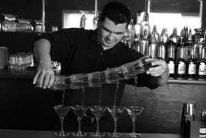
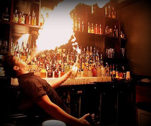
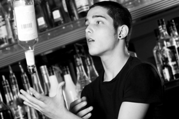

Layering is the act of carefully pouring a small amount of liquid so it balances on top of another ingredient. This is done by using the back of a barspoon to gently float the ingredient on top of the ingredients already in the glass. This technique is often used to make layered shots and works best when pouring the denser ingredients first. The heavier liquors will sink while the lighter rise to the top. To maintain the layered effect, the drink should not be stirred.
Rimming a glass is the act of moistening the rim of the glass and dipping the glass in either salt, sugar, or occasionally cocoa or powdered sugar. To moisten the glass, take a slice of fresh fruit and wipe the rim of the glass. Pour the desired ingredient on a plate or napkin, turn your glass upside down, and rub it in the ingredient of choice. Pour your drink into the glass and serve.
 |
 |
 |
The debate of shaken versus stirred cocktails is hot, especially when talking about the famous Martini. As you're looking through cocktail recipes you'll see some are shaken, some stirred, but is there a theory behind which method to choose? Yes, there is a general rule (as rules go in bartending). There are always exceptions to this rule so it is best to follow a recipe's instructions or, why not, experiment with both.
Shake cocktails when they include fruit juices, cream liqueurs, simple syrup, sour mix, egg, dairy or any other thick or flavorful mixers. Shaking will create a strained drink with a cloudy, effervescent look at first that will clear up within a few minutes after straining.
Chocolate Martini, Cosmopolitan, Mai Tai, New Orleans Fizz
Stir cocktails that use distilled spirits or very light mixers only. Stirring is a more gentle technique for mixing cocktails and is used to delicately combine the drinks with a perfect amount of dilution. Many gin and whiskey cocktails are stirred because shaking is said to "bruise" the spirit.
This "rule" refers to cocktails and not necessarily mixed drinks which are almost always stirred and served with a sipstick or straw for further, fine-tuned stirring as the drink is consumed.
Imperial Cocktail, Manhattan, Martini, Rob Roy